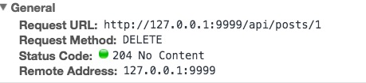

HTTP 204响应码
HTTP 204响应码含义
在读《CORS In Action》时候，作者设计DELETE API时候给出一个HTTP 204的返回码，没有接触过204 No Content，
搜索记录下：
For a PUT request: HTTP 200 or HTTP 204 should imply “resource updated successfully”.
对于PUT请求: 200或者204说明了 “资源更新已成功”。
For a DELETE request: HTTP 200 or HTTP 204 should imply “resource deleted successfully”.
对于DELETE请求：200或者204说明了 “资源删除已成功”
那么200和204有何区别呢？
维基百科描述204如下：
服务器成功处理了请求，但不需要返回任何实体内容，并且希望返回更新了的元信息。响应可能通过实体头部的形式，返回新的或更新后的元信息。如果存在这些头部信息，则应当与所请求的变量相呼应。
如果客户端是浏览器的话，那么用户浏览器应保留发送了该请求的页面，而不产生任何文档视图上的变化，即使按照规范新的或更新后的元信息应当被应用到用户浏览器活动视图中的文档。
由于204响应被禁止包含任何消息体，因此它始终以消息头后的第一个空行结尾。
可以看出204表示，资源已经删除了，但是不需要给出明确的返回信息，仅仅以HTTP响应码的方式告诉你。
如果客户端是浏览器，那么不会进行重定向等操作。
这样做的好处在于减少了响应内容，节省了流量，不过由于没有返回内容，可能会给用户带来困惑。
204响应的实例如下：

参考:
http://stackoverflow.com/questions/2342579/http-status-code-for-update-and-delete
https://zh.wikipedia.org/wiki/HTTP%E7%8A%B6%E6%80%81%E7%A0%81
http://www.laruence.com/2011/01/20/1844.html